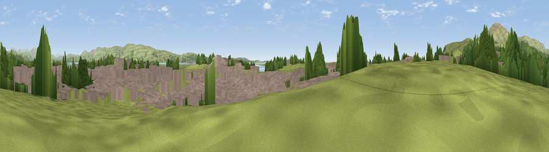

Viewpoint near Millom
#35743 in England · top 94% of its area beats it · near MillomWhere it is
The exact computed spot (SD 17222 79848). Click the marker for map links.
The view, rendered

A 360° render of this exact spot computed from the terrain model, tree cover and land cover — summer colours, afternoon light, calibrated against photographs of famous viewpoints. Real trees, hedges and buildings will differ in detail.
The panorama
Grey silhouette: terrain skyline in each direction (720 bearings, Earth curvature and refraction included). Dashed green: skyline with trees (+15 m) and buildings (+8 m) as obstacles. Blue strip: how far the ground is visible on each bearing.
Where the view opens
Wedge length = distance to the farthest visible ground on that bearing (vegetation-aware). Rings at 10, 25 and 50 km.
What fills the view
46% grassland · 39% built-up · 11% woodland · 3% water ·
Angular shares of the visible panorama (visual magnitude), not map area. Landscape diversity 0.49 (0–1 Shannon).
Key numbers
More beautiful places nearby
The staircase of upgrades: each row has a higher view potential than everything closer. Driving times are estimates from straight-line distance, calibrated against real road routing — check an actual route before setting out.
| Place | Direction | Drive | Score |
|---|---|---|---|
| Viewpoint near Kirksanton | NW · 3 km | ~6 min | 75.6 |
| Viewpoint near Kirksanton | NW · 3 km | ~7 min | 78.4 |
| Viewpoint near Whicham | NW · 5 km | ~12 min | 86.6 |
| Viewpoint near Whitbeck | NW · 6 km | ~13 min | 88.1 |
| Viewpoint near Whitbeck | NW · 7 km | ~15 min | 88.3 |
| Viewpoint near Finsthwaite | ENE · 23 km | ~38 min | 90.3 |
| The Knoll | S · 394 km | ~377 min | 91.0 |
54.20766, -3.27065 · source: osm viewpoint · position refined by local search. Computed location — check access rights before visiting.